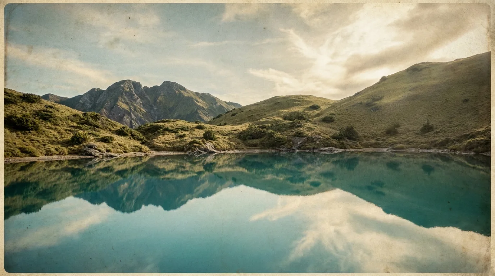
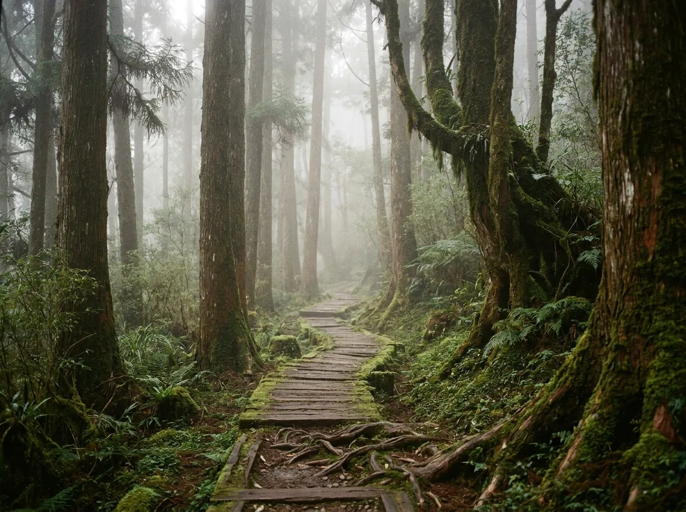
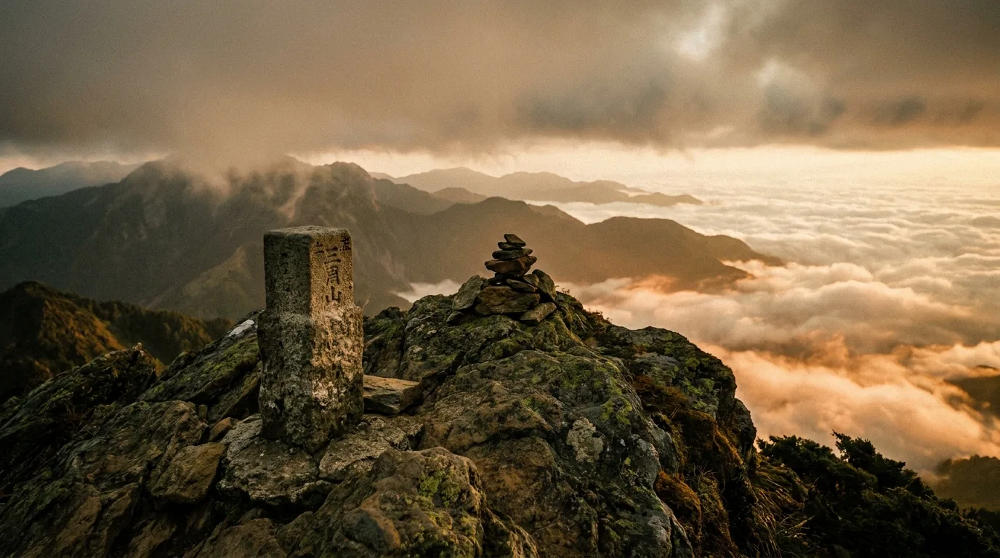

一條稜線，一則故事
稜線誌以野外圖鑑的視角，記錄這座島嶼上的高山路線、登山裝備與行走的人。為每一次出發，準備一份可靠的閱讀。
本期精選
我們相信，好的山行始於充分的準備。以下是這一期最受讀者收藏的深度專文。

從向陽登山口到三叉山與嘉明湖，逐段拆解里程、水源、營地與高度適應，給第一次走中級高山的你。
從穿著的洋蔥式三層、到背包負重的分配邏輯，建立一套可長期沿用的裝備思維，而非一次性採購清單。

台灣中海拔的霧林是最具魔幻感的地帶。一組影像，記錄光線穿過水氣的那些瞬間。

為什麼是稜線誌
市面上不缺路線資料，但稜線誌想做的是把零散的資訊整理成可信賴的脈絡：每一條路線都標註水源、撤退點與真實里程，每一篇裝備文都解釋背後的原理。
出發前，先讀一段
訂閱稜線誌，每月收到新的路線指南、裝備測試與山岳影像。我們不寄送廣告，只寄好好寫成的內容。